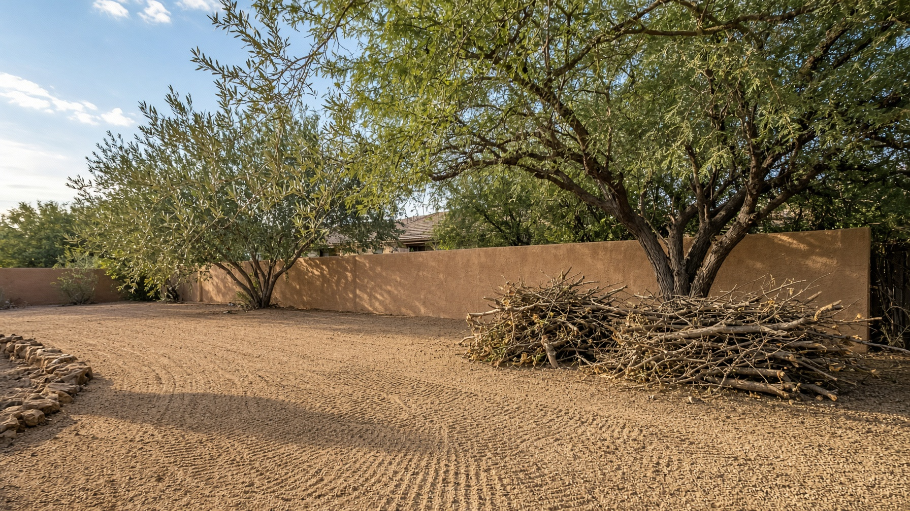
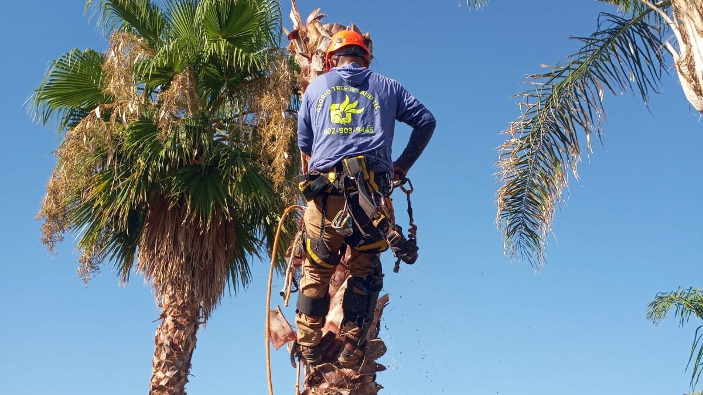
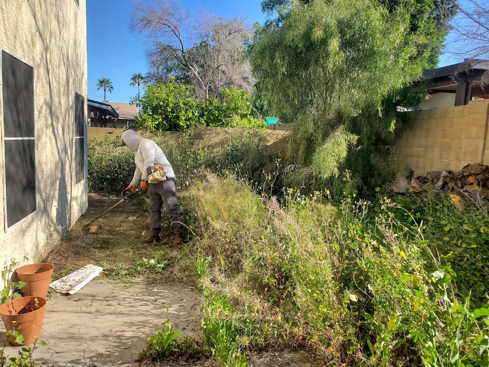
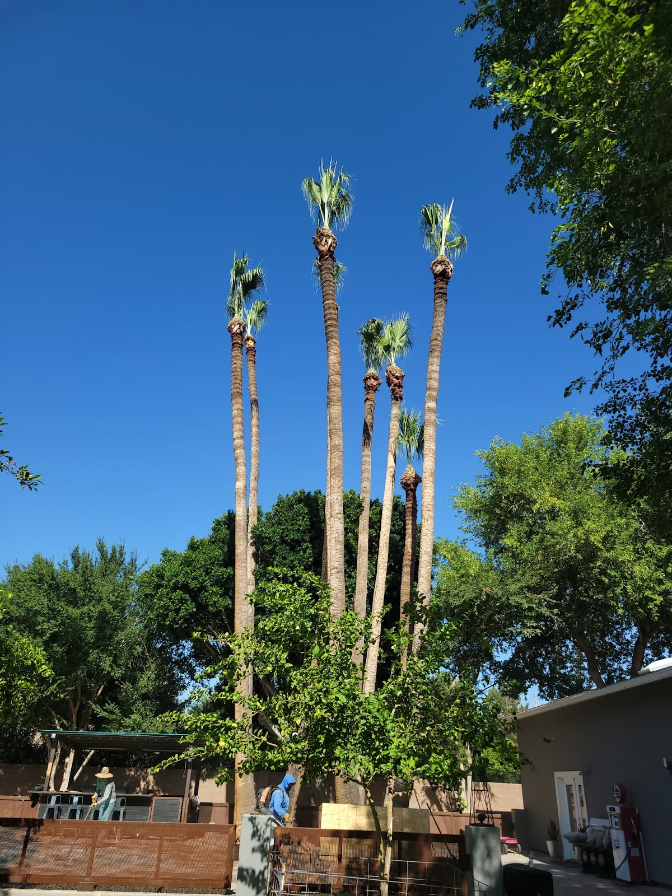
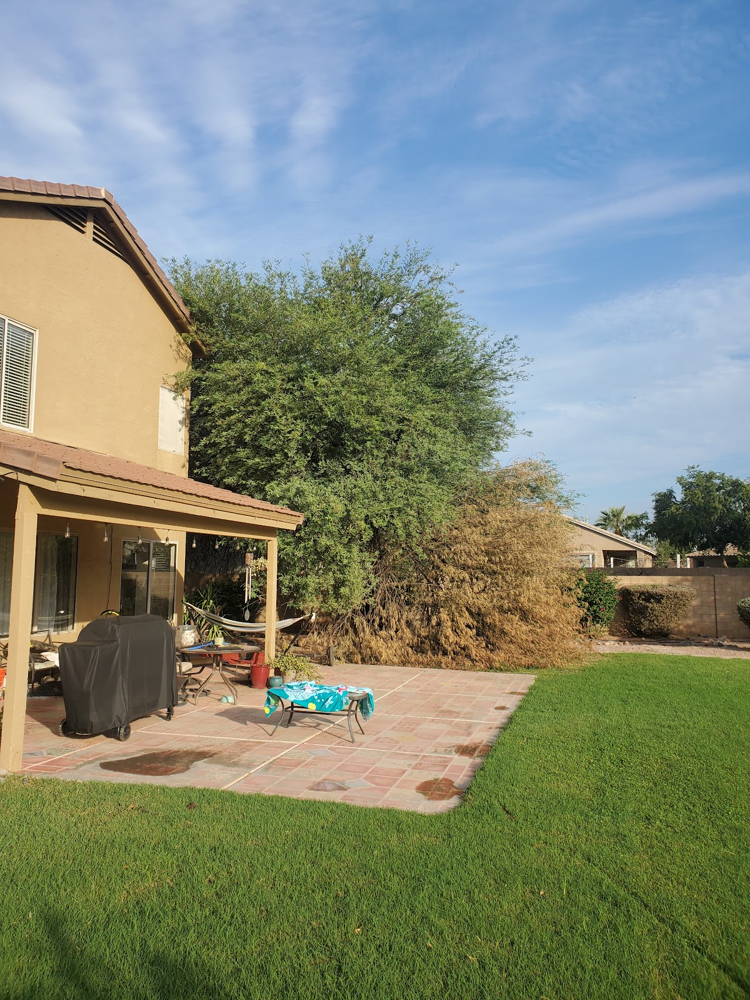
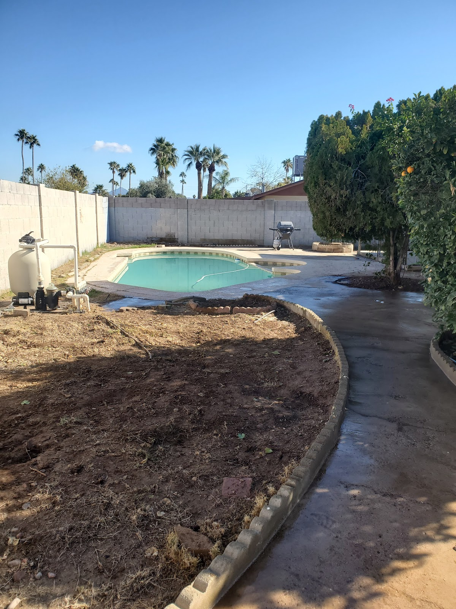

Most Mesa tree quotes forget the land. Osorio is the crew that cuts the crown and rakes the lot — branches stacked, granite raked, the alley not used as a dump.
4.7 / 13 Google reviews
Mesa trees collect desert weight — mistletoe, deadwood, the limb over the AC. Osorio is the service that takes the limb and the mess.
The lot behind the block wall. The rental that went feral. The alley the last tenant used. Land cleanup is a dump-run with a rake, done right.
One crew, one day, both problems. That is the company name. Do not hire a trimmer and a cleaner who will not talk to each other.





Quote includes haul-off and a raked lot. If you only want the cut, say so — we still will not leave a slash pile.
One day when the crown is modest. Two when the palm skirt has been waiting three years.
We photograph the lot before we leave. You can find that habit on Instagram @osorio_tree_service.
4.7 from 13 Google reviews. 1209 E 2nd Pl, Mesa. On Facebook and Instagram if you want to see the week’s piles.
Osorio Tree and Land Service · (602) 903-9445 · 1209 E 2nd Pl, Mesa, AZ 85203